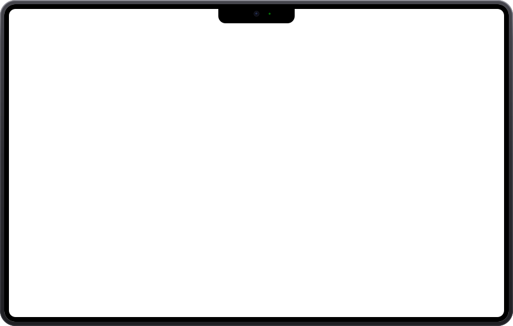

Recovery by byte offset
The phone counts every byte it has drawn. On reconnect the Mac replays only the gap: no screen clear, no lost scrollback.
Resumed from byte 184,320 · gap 2.1 sConnectly is a private terminal bridge from your phone to the Mac you left behind. Run Claude Code, Codex and opencode on real shells with real scrollback, and no cloud in between.

Four promises, each one measured on the screen instead of claimed on a page.
Keystroke to painted echo, measured inside the terminal.
Signal gone for minutes. Same session, same scrollback, back in a second.
Shut the lid and leave. The shells keep running on the Mac.
Battery, charging, lid and load, pushed every ten seconds.
Everything beyond the terminal is allow-listed, token-gated and logged.
The phone counts every byte it has drawn. On reconnect the Mac replays only the gap: no screen clear, no lost scrollback.
Resumed from byte 184,320 · gap 2.1 sClosing a tab detaches it. Ending a session is its own tap.
 pi
piThe phone sends an id. Never a command.
Screen Sharing starts when you ask and turns itself off.
Claude Code on the Mac gets the same actions over a local socket.
claude mcp add connectly -- termd mcpOne token you generate on your own Mac.
Phone to Mac over Tailscale. Nothing in between.
Five wrong tokens and the door shuts for five minutes.
Install the daemon on your Mac, then connect the app with its address and token.
./install.sh 100.x.y.z